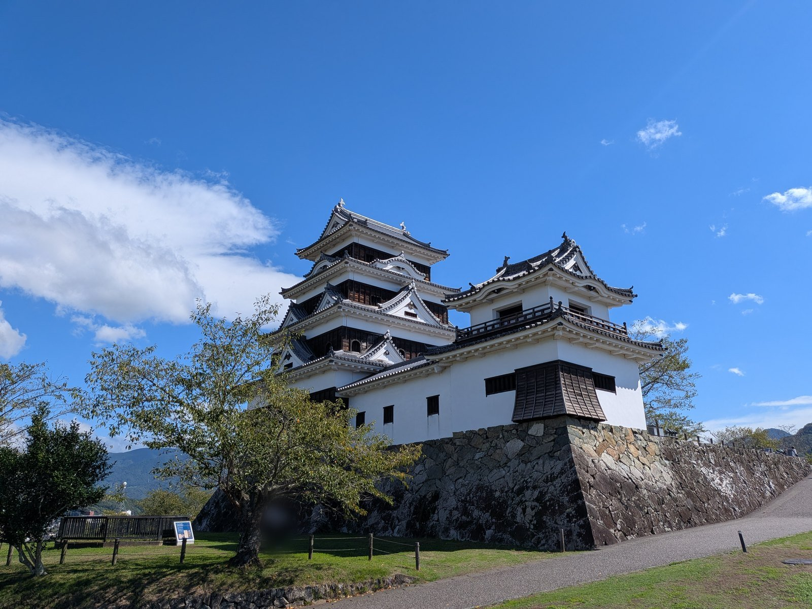

大洲の視点 ・ 出典: 大洲市「指定管理者制度導入施設に係るモニタリングシート」令和6年度分(23枚)・令和6年度一般会計予算書・大洲市議会会議録（情報源日付: 2025-11-12） ・ 約12分で読める
大洲市が外に任せた30施設の一覧。市が払うお金は1年で1億8,661万円、0円の施設も9つある

 メモう
メモう
大洲城で払う入館料は、市やなくて、城を任された団体の収入になるんよ。
市が外に任せた30施設に払うお金は、1年で1億8,661万円。
そのうち9つは0円で、デイサービスは4か所ともお金が足りとらんかったんやって。
3行でいうと調べた資料 33本
- 市が外に任せた30施設(シート23枚)に、令和6年度に市が払った指定管理料は合わせて1億8,661万円だった
- 半分の50.2％は旧肱川町と旧河辺村の5枚。0円の9施設は、介護保険の報酬や売上で回っている
- 大洲城と臥龍山荘は指定管理料を除いても黒字。長浜のデイサービスは赤字が続き、令和8年3月末での廃止が決まった
大洲城で入館料の550円を払う。そのお金は、市の財布には入らない。
城を任されている一般社団法人キタ・マネジメントの収入になる。市が公表している大洲城の決算を開くと、入館料の収入2,133万8,419円が、この団体の側に書いてある。
大洲市には、こういう施設が30ある。市の建物を、市の外の団体が動かす「指定管理」という仕組みだ。施設の名前と、任されている14の団体は、前に大洲城も、あさもやも、道の駅も。市が外に任せた30施設を数えたで数えた。
そのときは、市がそれぞれにいくら払っているのかまでは調べきれなかった。今回、市が公表しているシートを23枚とも開いて、1枚ずつ数字を写した。
30施設に、市はいくら払っているのか
令和6年度は、合わせて1億8,661万円だった。
市は年に1度、任せた先がきちんと動かしているかを点検して、施設ごとに「モニタリングシート」にまとめている。令和6年度分は、2025年11月12日に公表された。シートは23枚で、1枚に2〜4の施設が入っているものもある。施設の数にすると30になる。
どのシートにも、任された団体の1年の収入と支出が、1円の単位まで書いてある。収入の欄に「指定管理料」「指定管理受託料収入」「大洲市受託金収入」とあるのが、市から受け取ったお金だ。23枚ぶんを足すと、186,609,964円になった。
払っているのは14枚、21施設。残りの9施設は0円だった。
令和6年度。モニタリングシート23枚から、分野ごとに足した
- 観光の施設 1億4,591万円
- 福祉の施設 4,008万円
- 集会の施設 62万円
観光は13枚18施設、福祉は7枚8施設、集会は3枚4施設。0円の9施設は、どの分野にもある。
市の予算書でも確かめた。令和6年度の当初予算には「指定管理委託料」の行が4つあり、足すと1億9,200万1千円になる。そのうち総合福祉センターの3,707万円、肱流苑の301万円、平野コミュニティセンターの62万4千円は、シートの額とぴったり同じだった。
観光の施設の分は、予算書では1行にまとめて1億5,129万7千円と書いてあり、施設ごとの内訳は無い。シートの観光の13枚を足すと1億4,591万円で、予算の96％にあたる。施設ごとの額が分かるのは、シートだけということになる。
30施設の一覧
利用者の数は、シートに書いてある1年の合計である。デイサービスと大洲学園は延べの人数。河辺は宿泊の793人と才谷屋の308人を、鹿鳴園ほかは風の博物館の3,051人と鹿鳴園の4,258人を足した。指定管理料は万円未満を四捨五入した。
福祉の施設は7枚、8施設。
| 施設／任されている団体 | 利用者(令和6年度) | 指定管理料 |
|---|---|---|
| 老人デイサービスセンター東大洲／大洲市社会福祉協議会 | 7,703人 | 0円 |
| 老人デイサービスセンター若宮／大洲市社会福祉協議会 | 2,135人 | 0円 |
| 障害者デイサービスセンター東大洲／大洲市社会福祉協議会 | 1,327人 | 0円 |
| 老人デイサービスセンター長浜／大洲市社会福祉協議会 | 2,411人 | 0円 |
| 肱川高齢者生活福祉センター、老人デイサービスセンター肱流苑／医療法人恕風会 | 9,619人 | 301万円 |
| 総合福祉センター／大洲市社会福祉協議会 | 54,130人 | 3,707万円 |
| 大洲市立大洲学園／社会福祉法人大洲育成園 | 19,543人 | 0円 |
集会や研修に使う施設は3枚、4施設。
| 施設／任されている団体 | 利用者(令和6年度) | 指定管理料 |
|---|---|---|
| 林業総合センター／大洲市森林組合 | 1,525人 | 0円 |
| 肱川基幹集落センター／川上商工会 | 375人 | 0円 |
| 平野コミュニティセンター、同 平地上分館／平野自治会 | 3,174人 | 62万円 |
観光の施設は13枚、18施設。
| 施設／任されている団体 | 利用者(令和6年度) | 指定管理料 |
|---|---|---|
| 大洲城／一般社団法人キタ・マネジメント | 50,056人 | 164万円 |
| 臥龍山荘／一般社団法人キタ・マネジメント | 53,308人 | 73万円 |
| 旧松井家住宅(盤泉荘)／一般社団法人キタ・マネジメント | 18,837人 | 1,009万円 |
| おおず赤煉瓦館／一般社団法人キタ・マネジメント | 32,417人 | 850万円 |
| 大洲まちの駅「あさもや」／一般社団法人キタ・マネジメント | 72,664人 | 1,770万円 |
| 伊予大洲駅観光案内所／一般社団法人キタ・マネジメント | 25,604人 | 800万円 |
| 旧加藤家住宅／NIPPONIA 大洲 城下町 | 127人 | 0円 |
| 肱南憩いの里／(株)ラウンドテーブル | 29,470人 | 0円 |
| 道の駅「清流の里ひじかわ」／(株)清流の里ひじかわ | 108,349人 | 1,837万円 |
| 交流促進センター鹿野川荘／ひじかわ開発(株) | 40,639人 | 2,827万円 |
| 鹿鳴園、農村体験交流館「望湖荘」、風の博物館・歌麿館／(有)ひじかわ特産開発 | 7,309人 | 2,750万円 |
| 河辺ふるさとの宿、交流館「才谷屋」、坂本龍馬脱藩之日記念館、河辺ふるさと公園／(株)ゆうとぴあ河辺 | 1,101人 | 1,655万円 |
| 大洲家族旅行村／(株)おおず家族村 | 4,137人 | 856万円 |
シートは、任された団体の側の決算である。市が書いた帳簿ではない。それでも、指定管理料の額は、予算書と照らせる3枚で一致していた。
いちばん多く受け取っているのはどこか
施設ごとでは、総合福祉センターの3,707万円がいちばん多い。
令和6年度。モニタリングシートの収入の欄から
柿色は、旧肱川町と旧河辺村にある5枚。
団体ごとに足すと、6つの観光施設を任されているキタ・マネジメントの4,666万円がいちばん多い。2番目は総合福祉センターを任されている大洲市社会福祉協議会の3,707万円である。
地域で分けると、偏りが見える。旧肱川町と旧河辺村にある5枚のシートを足すと、9,370万円になる。道の駅、鹿野川荘、鹿鳴園ほか、河辺の4施設、肱流苑である。全体の50.2％にあたる。
令和6年度。合わせて1億8,661万円
- 旧肱川町・旧河辺村の5枚 9,370万円
- ほかの9枚 9,291万円
5枚は、道の駅、鹿野川荘、鹿鳴園ほか、河辺の4施設、肱流苑。
このうち道の駅、鹿野川荘、河辺の宿を任されている3社は、県が毎年まとめている県内市町の第三セクターの一覧に、大洲市の法人として載っている。市が出資する会社が、市の施設を動かしている形だ。
利用者1人あたりにすると、どうなるのか
指定管理料を利用者の数で割ると、施設によって1,000倍以上ちがう。
いちばん高いのは河辺の4施設で、1人あたり1万5,027円。いちばん低いのは臥龍山荘で、14円だった。大洲城は33円、道の駅は170円、総合福祉センターは685円になる。
令和6年度。指定管理料を、シートの利用者の数で割った
利用者の数え方は施設ごとにちがう。河辺は宿泊と才谷屋だけの人数。大きさの見当をつけるための数字。
ただし、利用者の数え方は施設ごとにちがう。河辺は宿泊と才谷屋の人数だけで、記念館や公園に来た人は入っていない。道の駅は、市の別の資料では2倍の人数になっている(理由は道の駅の記事に書いた)。宿と博物館と案内所を、同じものさしで比べることはできない。大きさの見当をつけるための数字である。
0円の9施設は、何で回っているのか
9つのうち5つは福祉の施設で、介護保険や障害福祉サービスの報酬で回っている。
デイサービスの4か所は、どれもシートに「指定管理料なし」と書いてある。収入のほとんどは介護保険の報酬だ。そして、4か所とも支出が収入を上回っていた。
| デイサービスセンター | 収入 | 支出 | 収入−支出 |
|---|---|---|---|
| 東大洲(老人) | 6,664万円 | 7,108万円 | −444万円 |
| 若宮(老人) | 2,066万円 | 2,475万円 | −409万円 |
| 東大洲(障害者) | 1,022万円 | 1,302万円 | −281万円 |
| 長浜(老人) | 2,257万円 | 3,118万円 | −861万円 |
大洲学園は、23枚の中で収入がいちばん大きい。2億6,027万円のうち、2億2,316万円が障害福祉サービスの報酬である。ここも支出が1,631万円上回っていた。
令和7年12月の市議会で、副市長はデイサービスの赤字についてこう答えている。
介護報酬等は公定価格であるため、物価上昇分を直接価格転嫁することができず、事業経営上の赤字要因になっている点も重要な課題であると捉えております。（中略）利用料金制による運営が困難と判断される場合には、指定管理料の支出による財政的支援も視野に入れ、事業継続に向けて検討してまいりたいと考えております。
大洲市議会 令和7年12月定例会 2日目(副市長の答弁)
同じ議会で、長浜のデイサービスセンターを令和8年3月末で廃止する条例の改正が、起立多数で可決された。副市長の答弁によると、長浜と近くの三善地区のデイサービス4か所は、定員の合計86人に対して1日の利用者が平均約47人で、利用率は約54.8％だった。廃止の理由には、利用者の減少と、近くの民間の事業所を圧迫しないことが挙げられている。
残りの4つは、それぞれ形がちがう。
- 肱南憩いの里は飲食店で、売上が6,363万円ある。シートには「経常利益」708万8,708円と書いてあり、地代家賃136万3,638円を支出に入れている
- 旧加藤家住宅は宿である。指定管理料は0円で、逆にキタ・マネジメントが「指定管理施設使用料」100万4円を支出に書いている。市の予算書の歳入には「指定管理施設使用料」254万円の行がある
- 林業総合センターは、収入が使用料の6,672円だけで、支出も6,672円だった
- 肱川基幹集落センターは、収入の大半が「負担金」85万4,521円である。だれが出している負担金なのかは、シートに書かれていない
市のお金が無くても黒字の施設はあるのか
ある。大洲城と臥龍山荘だ。
大洲城は、収入3,141万円に対して支出2,661万円で、480万円のプラスだった。指定管理料の164万円を除いても、315万円のプラスになる。臥龍山荘は351万円のプラスで、指定管理料の73万円を除いても278万円のプラスだった。
2つとも、入館料が任された団体の収入になっている。大洲城は2,134万円、臥龍山荘は2,159万円。指定管理料が小さいのは、入館料で回せるからだと読める。
同じキタ・マネジメントが任されている盤泉荘は、形がちがう。収入1,015万円のうち、99.4％が指定管理料の1,009万円で、入館料の収入は書かれていない。市の予算書の歳入には「盤泉荘使用料」229万4千円の行があるので、盤泉荘の観覧料は市に入っていると見られる。大洲城と同じ550円の観覧料でも、どちらの財布に入るかで、シートの見え方は大きく変わる。
令和6年度。モニタリングシートの収入の欄から
- 指定管理料
- 入館料の収入
盤泉荘のシートには入館料の収入が無い。市の予算書の歳入に「盤泉荘使用料」229万4千円がある。
臥龍山荘の観覧料は、令和9年4月1日から改定される。令和7年12月の市議会の委員長報告によれば、目的はオーバーツーリズムの対策と文化財の保全で、大洲市民の観覧料は据え置くという。
15年前と比べると、どう変わったのか
市が払うお金は、予算で比べると1.78倍になっている。
平成22年12月の市議会で、当時の企画財政部長はこう答えている。
これら24の施設のうち、指定管理料０の施設が８施設ありますので、指定管理料の合計額は、平成22年度の予算ベースで申しますと16施設で約１億800万円となっております。
大洲市議会 平成22年12月定例会 2日目(企画財政部長の答弁)
令和6年度の予算の1億9,200万1千円は、その1.78倍である。施設は24から30に増え、0円の施設は8から9になった。ただし中身は入れ替わっていて、平成22年には体育施設も入っていた。同じ施設どうしを比べたわけではない。
平成22年度は市議会の答弁、令和6年度は当初予算の指定管理委託料の合計
施設の中身は入れ替わっている。平成22年度には体育施設も入っていた。
最近の増え方には、はっきりした理由がある。令和7年3月の市議会で、観光の指定管理料を増やす理由を聞かれた環境商工部長は、こう答えた。
今回の指定管理料の増額につきましては、その主たるものは、近年高騰している人件費の増額分であり、キタ・マネジメントが管理する施設だけでなく、観光関連の指定管理施設全てに該当するものであります。
大洲市議会 令和7年3月定例会 2日目(環境商工部長の答弁)
令和6年度のシートの数字は、この増額の前のものである。
この一覧は、これからどう変わるのか
令和6年度のあとも、入れ替わりは続いている。
- 長浜のデイサービスセンターは、令和8年3月末での廃止が決まった
- しろしたテラスは、令和7年12月の市議会で指定管理者が決まった。令和8年4月に使い始める予定とされた施設で、指定管理料は令和8年度と9年度は年1,450万円が上限である
- 令和8年3月の市議会で、久米コミュニティセンターの指定管理者が、起立全員で決まった。道の駅、鹿野川荘、河辺の4施設も、同じ議会で次の期間の指定管理者が決まった
- 市は、コミュニティセンターを令和9年度から自治会の指定管理にしていく方針である。くわしくは前の記事に書いた
- 臥龍山荘の観覧料は、令和9年4月に改定される
調べても分からなかったこと
- 肱川基幹集落センターの「負担金」85万4,521円を、だれが出しているのか
- 観光の施設ごとの予算の額。予算書は1行にまとめてある。キタ・マネジメントの6施設に、指定管理料をどう割り振っているのか(大洲城は164万円、臥龍山荘は73万円)
- 盤泉荘の観覧料だけが市に入る理由。条例の本文までは確かめていない
- 県内のほかの市町の、施設ごとの指定管理料。同じ形で並べた資料は見つからなかった
- 令和7年度の数字。シートはまだ公表されていない
並べてみて
指定管理料が少ない施設が、もうかっていない施設とは限らなかった。逆も同じで、大洲城の164万円は、城の人気が低いからではなく、入館料で回せるからだった。
いちばん驚いたのは、0円の施設がいちばん苦しそうに見えたことだ。デイサービスの4か所は、市のお金を受け取らずに、4か所とも赤字だった。そのうちの1つは、もう閉じる。
出典・参考にした資料
指定管理者制度導入施設に係るモニタリング及び評価シートの公表について／大洲市(2025年11月12日更新。令和6年度分のモニタリングシート23枚と評価シート22枚) 令和6年度モニタリングシート 大洲市老人デイサービスセンター東大洲／大洲市(令和6年度分。2025年11月12日更新の一覧に掲載) 令和6年度モニタリングシート 大洲市老人デイサービスセンター若宮／大洲市(令和6年度分。2025年11月12日更新の一覧に掲載) 令和6年度モニタリングシート 障害者デイサービスセンター東大洲／大洲市(令和6年度分。2025年11月12日更新の一覧に掲載) 令和6年度モニタリングシート 大洲市老人デイサービスセンター長浜／大洲市(令和6年度分。2025年11月12日更新の一覧に掲載) 令和6年度モニタリングシート 大洲市肱川高齢者生活福祉センター、老人デイサービスセンター肱流苑／大洲市(令和6年度分。2025年11月12日更新の一覧に掲載) 令和6年度モニタリングシート 大洲市総合福祉センター／大洲市(令和6年度分。2025年11月12日更新の一覧に掲載) 令和6年度モニタリングシート 大洲市林業総合センター／大洲市(令和6年度分。2025年11月12日更新の一覧に掲載) 令和6年度モニタリングシート 大洲市肱川基幹集落センター／大洲市(令和6年度分。2025年11月12日更新の一覧に掲載) 令和6年度モニタリングシート 大洲まちの駅「あさもや」／大洲市(令和6年度分。2025年11月12日更新の一覧に掲載) 令和6年度モニタリングシート 道の駅「清流の里ひじかわ」／大洲市(令和6年度分。2025年11月12日更新の一覧に掲載) 令和6年度モニタリングシート 交流促進センター鹿野川荘／大洲市(令和6年度分。2025年11月12日更新の一覧に掲載) 令和6年度モニタリングシート 河辺ふるさとの宿、交流館「才谷屋」、坂本龍馬脱藩之日記念館、河辺ふるさと公園／大洲市(令和6年度分。2025年11月12日更新の一覧に掲載) 令和6年度モニタリングシート おおず赤煉瓦館／大洲市(令和6年度分。2025年11月12日更新の一覧に掲載) 令和6年度モニタリングシート 鹿鳴園、農村体験交流館「望湖荘」、風の博物館・歌麿館／大洲市(令和6年度分。2025年11月12日更新の一覧に掲載) 令和6年度モニタリングシート 大洲家族旅行村／大洲市(令和6年度分。2025年11月12日更新の一覧に掲載) 令和6年度モニタリングシート 大洲城／大洲市(令和6年度分。2025年11月12日更新の一覧に掲載) 令和6年度モニタリングシート 臥龍山荘／大洲市(令和6年度分。2025年11月12日更新の一覧に掲載) 令和6年度モニタリングシート 肱南憩いの里／大洲市(令和6年度分。2025年11月12日更新の一覧に掲載) 令和6年度モニタリングシート 伊予大洲駅観光案内所／大洲市(令和6年度分。2025年11月12日更新の一覧に掲載) 令和6年度モニタリングシート 旧加藤家住宅／大洲市(令和6年度分。2025年11月12日更新の一覧に掲載) 令和6年度モニタリングシート 旧松井家住宅(盤泉荘)／大洲市(令和6年度分。2025年11月12日更新の一覧に掲載) 令和6年度モニタリングシート 大洲市立大洲学園／大洲市(令和6年度分。2025年11月12日更新の一覧に掲載) 令和6年度モニタリングシート 平野コミュニティセンター、平野コミュニティセンター平地上分館／大洲市(令和6年度分。2025年11月12日更新の一覧に掲載) 令和6年度 大洲市一般会計予算／大洲市(令和6年度当初予算。「令和６年度予算の概要」のページに掲載。指定管理委託料と、歳入の盤泉荘使用料・指定管理施設使用料の行) 県内市町の第三セクター等の状況(令和6年度末現在)／愛媛県(令和6年度末現在。大洲市の第三セクターの名前と事業の内容) 平成22年12月大洲市議会定例会 会議録 2日目／大洲市(2010年12月。24施設のうち16施設で約1億800万円という企画財政部長の答弁) 令和7年3月大洲市議会定例会 会議録 2日目／大洲市(2025年3月。観光の指定管理料を人件費で増やすという環境商工部長の答弁) 令和7年12月大洲市議会定例会 会議録 2日目／大洲市(2025年12月。デイサービスの赤字と、長浜の廃止についての副市長の答弁) 令和7年12月大洲市議会定例会 会議録 5日目／大洲市(2025年12月。長浜のデイサービスの廃止、臥龍山荘の観覧料の改定、しろしたテラスの指定管理料についての委員長報告と採決) 令和8年3月大洲市議会定例会 会議録 1日目／大洲市(2026年3月。久米コミュニティセンター、道の駅、鹿野川荘、河辺の4施設の指定管理者の指定の議案) 令和8年3月大洲市議会定例会 会議録 4日目／大洲市(2026年3月。上の議案の採決) 令和8年6月大洲市議会定例会 会議録 3日目／大洲市(2026年6月。コミュニティセンターを令和9年度から自治会の指定管理にするという答弁)この記事をサイトに掲載した日: 2026/10/03